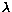
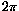

The input initial conditions are read and transformed into the integration coordinates, which are barycentric cartesian coordinates; this is done in the routines contained in the file input9.f. The output files are initialised by writing a header, then by writing the initial conditions as transformed in the output coordinate system; after some initialisations, the main program (see the file orbit9.f) goes into the main loop, propagating the state vector until the next filter input time; the output data are filtered, and when the filter output is ready it is written in the filtered output files; the sampled data are written in a way which appears asyncronous in the program, but which exactly compensates for the filter startup delay in such a way that the two time series are in phase. Periodically the state vector is dumped to allow for restart without significant loss of precision.
All the above is quite straightforward, possibly the most complicated pieces of software being the coordinate change library (contained in coord.f), apart from the propagator which is anyway well isolated and can be considered as a black box. Let us now discuss some special features of this program: the handling of angle variables and the variational equations.
As for angle variables, let us take as an example the coordinate types EQU, that is equinoctal elements, which is always used in output from Orbit9 (The other case, Keplerian elements, can be produced by Conv9, see section 4). The last coordinate is the mean longitude , and it is always written as a principal value (between 0and ) plus a number of revolutions. The number of revolutions at the initial time is always given in input (it is assumed to be zero in the catalogue input case), and the count of the number of revolutions is kept up to date; this is true both for the sampled and the filtered output. This is achieved by exploting a 2-body approximation, that is the number of revolutions is predicted at each filter input by using the mean motion and corrected at most by one; the filter preserves the linear trend of the angular variables (because the filter coefficients have sum exactly 1 and are symmetric) and removes the superimposed short periodic oscillations. Strongly unstable orbits (e.g. undergoing temporary satellite capture, and/or very close approaches) can however result in a cycle slip; in this case, the filtered output shows the filter response to a step function, which is a diffraction pattern; these cases have to be interpreted with some caution (see the Ramos documentation).
The estimation of the maximum Lyapounov Characteristic Exponent is performed by solving the linearized equations of displacement for a single variation vector. Whenever a new LCE estimation is requested, a variation vector with random components and unitary norm is used as initial condition. The output then contains a column with, for each asteroid, the natural logarithm of the current norm of the vector solution of the variational equation (the norm is controlled by the input parameter semim); if the variational equation is not being computed for some asteroid, this column contains a zero. The maximum LCE can be estimated (actually, this is an upper bound) by a linear fit to this quantity. However, the variation vector is renormalised to avoid possible overflow if the integration interval is much longer than the inverse of the maximum LCE; this is totally transparent in the output, although the operation performed is quite complex, involving the use of the starter (because the state vector, including the variation vector, has a discontinuity).
These two features require some quirky code to handle the case in which the integration is restarted from some dump. If everything is continued without any change of parameters (the only option changed in orb9.opt is nout) the revolution count and the LCE estimation are just continued. On the contrary there are some tricky cases when something has been changed, e.g. the list of asteroids for which the LCE has to be estimated (this would occur if the list of asteroids required, as given in orb9.opt, was reordered). If the LCE requested in a continuation integration is a new one, then the variation vector is initialised in a random way with norm 1. If continuation occurs starting not from the dump file, but from some other output file, then some strange computations have to be done to make sure that the revolution counters are reinitialised properly. Hopefully, all this will work automatically and it is difficult to make a mistake which actually results in a wrong output.
The propagator-interpolator is described elsewhere (e.g. Orbit4 mathematical specifications, Milani 1992, Milani and Nobili 1988); in essence, it contains a symplectic single step method (implicit Runge-Kutta-Gauss) and a multistep predictor/corrector. The output data are not really interpolated: if the output time is not a multiple of the stepsize, a short step is performed with the signle-step method. Thus the filter input interval dt/isamp should be a multiple of h for optimum performance, and an interpolator should be added for dense output; if the automatic selection of the stepsize is enabled, h is automatically selected as a submultiple of the filter input interval. This version (see propin9.f) has anyway to be considered a temporary one, to be replaced by a more user friendly and reliable one.